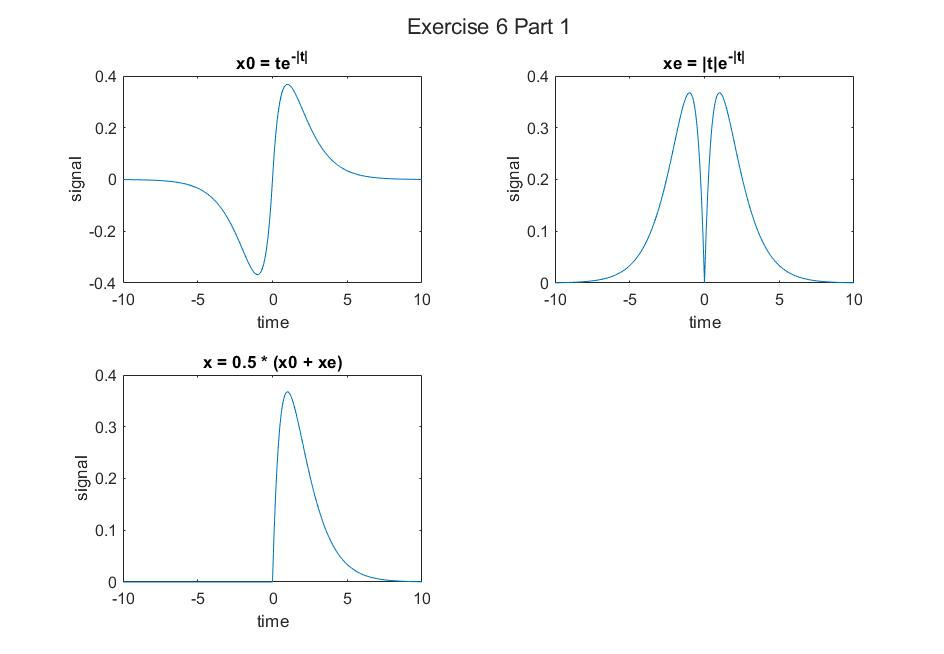
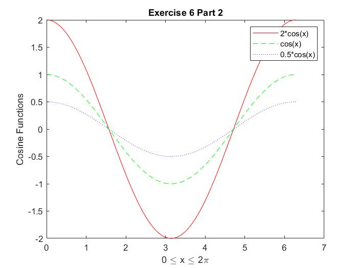

In this lab, I used Matlab commands to add, subtract, and multiply matrices. I visualized my results by plotting graphs.
I defined two column matrices and experimented with Matlab’s multiplication operators.
>> a = [2 ; 4]
a =
2
4
>> b = [3 ; 1]
b =
3
1
>> a' % transpose of a
ans =
2 4
>> b' % transpose of b
ans =
3 1
>> a * b' % vector multiplication of a and the transpose of b
ans =
6 2
12 4
>> b' * a % vector multiplication of the transpose of b and a
ans =
10
>> a' * b % vector multiplication of the transpose of a and b
ans =
10
>> a .* b % element-wise multiplication of a and b
ans =
6
4
>> 3 .* b % element-wise multiplication of b by 3
ans =
9
3
As explained in the code:
’ is the transpose operator
* is matrix multiplication
.* is element-wise mulitiplication
I attempted to multiply a and b using matrix multiplication. I got the below error code.
>> a * b
Error using * Incorrect dimensions for matrix multiplication. Check that the number of columns in the first matrix matches the number of rows in the second matrix. To perform elementwise multiplication, use '.*'.This operation failed because matrix multiplication requires (by definition) the number of columns in the first matrix to be equal to the number of rows in the second matrix. In this case, a had one column but b had two rows. This is a mathematically invalid operation.
When using Matlab (or matrices in general) matrix dimensions must be accounted for.
Matlab prints the result of assignments operations by default. To suppress this output, end your statements with a semicolon (;).
>> c = a + b % prints output
c =
5
5
>> d = a + b; % suppresses output
>> d
d =
5
5
In this exercise, I experimented with the size command which reports the sizes of the dimensions of a matrix and the lenght command which returns the size of the biggest dimension.
It is important to note that even single element variables are stored as matrices in Matlab (a 1x1 matrix).
>> e = 17
e =
17
>> size(a)
ans =
2 1
>> size(b')
ans =
1 2
>> size(e) % variables are 1x1 matrices in Matlab
ans =
1 1
>> length(a')
ans =
2
>> length(b)
ans =
2
>> length(e)
ans =
1
In this exercise, I experimented with the colon (:) operator to quickly make lists.
>> g = 0:25
g =
Columns 1 through 14
0 1 2 3 4 5 6 7 8 9 10 11 12 13
Columns 15 through 26
14 15 16 17 18 19 20 21 22 23 24 25
>> size(g)
ans =
1 26
>> [g(1:3), g(length(g))] % first, second, third, and last elements
ans =
0 1 2 25
>> h = -10:10
h =
Columns 1 through 14
-10 -9 -8 -7 -6 -5 -4 -3 -2 -1 0 1 2 3
Columns 15 through 21
4 5 6 7 8 9 10
>> size(h)
ans =
1 21
>> [h(1:3), h(length(h))] % first, second, third, and last elements
ans =
-10 -9 -8 10
>> k = -10:0.1:10;
>> size(k)
ans =
1 201
>> [k(1:3), k(length(k))] % first, second, third, and last elements
ans =
-10.0000 -9.9000 -9.8000 10.0000
g is a list of the numbers from 0 (inclusive) to 25 (inclusive) with a step of 1. Because the 0 is counted, there are 26 elements.
h is a list of the numbers from -10 (inclusive) to 10 (inclusive) with a step of 1. Because both -10 and 10 are included, there are 21 elements.
k is the list of numbers from-10 (inclusive) to 10 (inclusive) with a step of 0.1. Because we include both -10 and 10, there are 201 elements.
In this exercise, I experimented with the plot function to draw exponential and cosine functions.
x0 and xe are double the odd and even components of x, respectively. As in they are the odd and even components of x multiplied by two.
t = -10:0.1:10;
>> abs_t = abs(t);
>> x0 = t .* exp(-abs_t);
>> xe = abs_t .* exp(-abs_t);
>> x = 0.5 .* (x0 + xe);
>> layout = tiledlayout(2,2);
>> title(layout, "Exercise 6 Part 1");
>> nexttile
>> plot(t,x0)
>> title("x0 = te^{-|t|}")
>> xlabel("time")
>> ylabel("signal")
>> nexttile
>> plot(t,xe)
>> title("xe = |t|e^{-|t|}")
>> xlabel("time")
>> ylabel("signal")
>> nexttile
>> plot(t,x)
>> title("x = 0.5 * (x0 + xe)")
>> xlabel("time")
>> ylabel("signal")
In the second half of the exercise, I drew three cosine functions with different colors.
>> x = 0:pi/100:2*pi;
>> y1 = 2 * cos(x);
>> y2 = cos(x);
>> y3 = 0.5 * cos(x);
>> plot(x,y1,"-r", x,y2,"--g", x,y3,":b")
>> xlabel("0 \leq x \leq 2\pi")
>> ylabel("Cosine Functions")
>> title("Exercise 6 Part 2")
>> legend('2*cos(x)','cos(x)','0.5*cos(x)')
In this lab, I experimented with Matlab’s core matrix arithmetic functionality and plotting tools. Matlab is easy to use for processing matrices.
However, when I’m working with matrices I have to pay attention to the dimensions of the matrices and whether I want a matrix operation or an element by element operation.
Matlab provides an easy to use plotting tool.